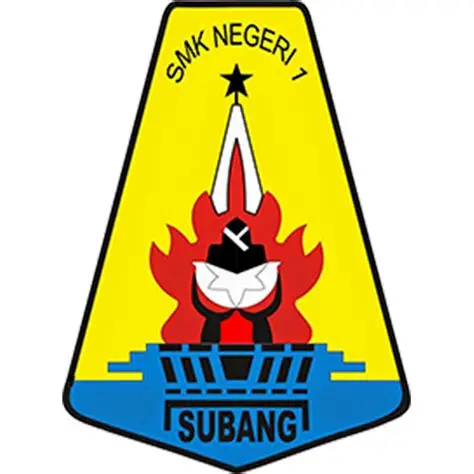

SMK Negeri 1 Subang adalah salah satu sekolah menengah kejuruan terletak di Subang, Indonesia. Sekolah ini memiliki berbagai program keahlian yang bertujuan untuk mempersiapkan siswa agar siap menghadapi dunia kerja dan melanjutkan pendidikan ke jenjang yang lebih tinggi. Nesas BerAKSI merupakan wujud komitmen sekolah dalam membentuk peserta didik melalui lima pilar utama, yaitu Berkarakter, Adaptif, Kompeten, Sinergis, dan Inovatif. Melalui pilar-pilar tersebut, peserta didik dibina agar memiliki akhlak mulia, disiplin, menguasai kompetensi sesuai kebutuhan dunia kerja, mampu beradaptasi dengan perkembangan teknologi, serta memiliki semangat berkolaborasi, peduli lingkungan, dan berjiwa wirausaha.